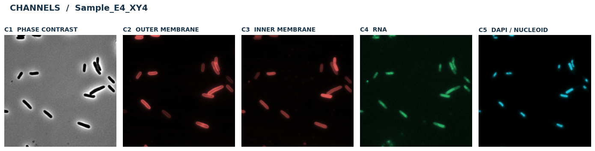
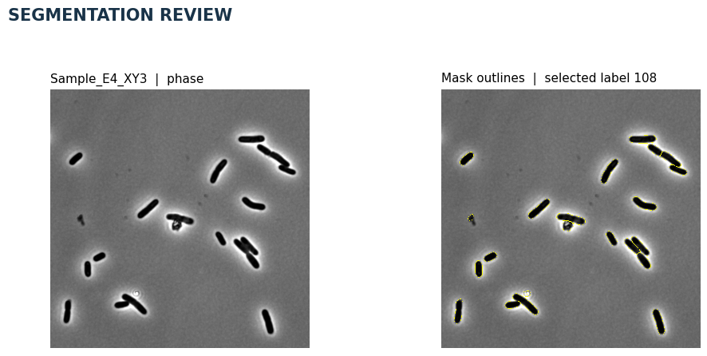
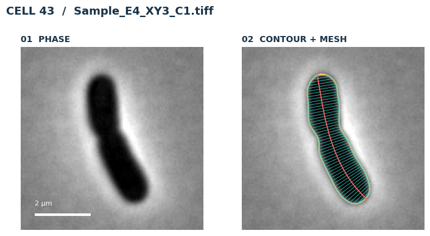
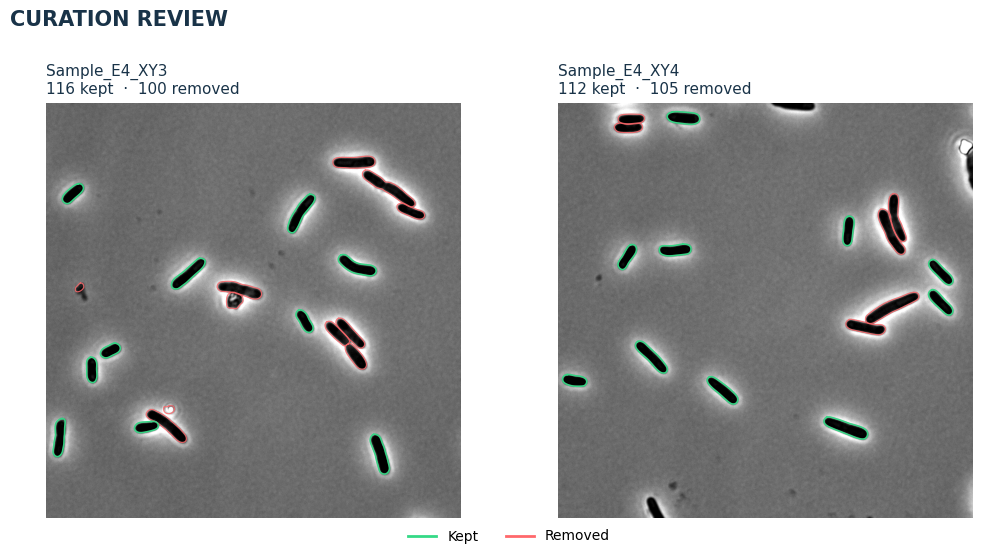
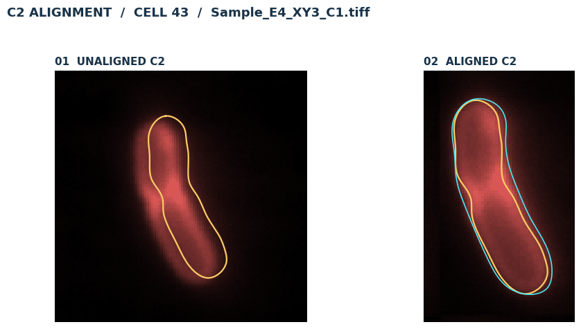
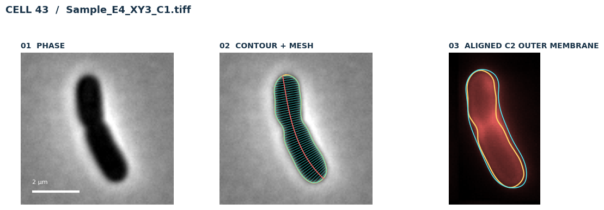
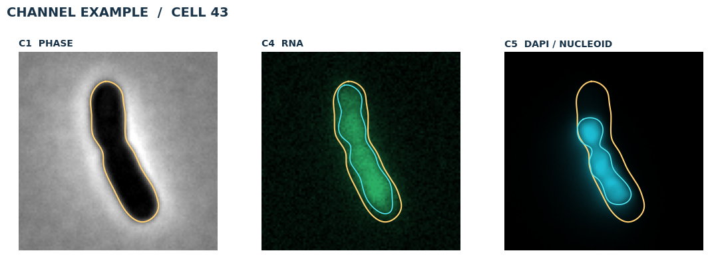
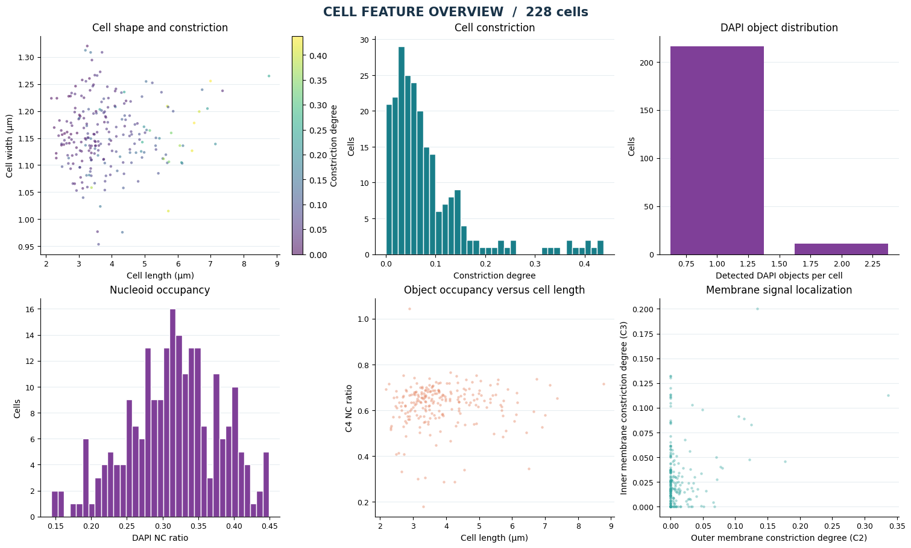
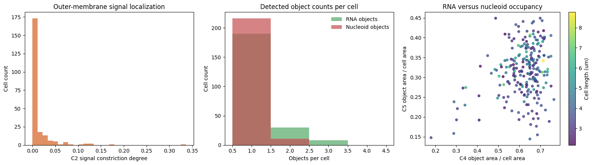
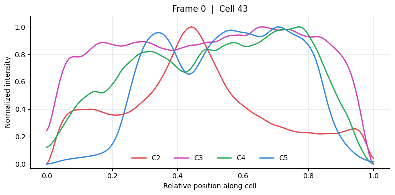

This walkthrough follows the original examples/5_channel_example_walkthrough.ipynb notebook. Download the notebook or Python script. The figures show saved results from this example dataset. Run the notebook to reproduce the analysis.
Five-channel walkthrough: membranes and multichannel profiles¶
Each field has phase contrast (C1), outer membrane (C2), inner membrane (C3), RNA (C4), and DAPI/nucleoid (C5). This example emphasizes membrane measurements; the three-channel example emphasizes small GFP-DnaN objects. The workflow segments, builds meshes, curates them with its bundled SVM, detects signal objects, and extracts features.
Run from top to bottom. The first code cell points to the example folder; images, masks, and outputs stay there. Change RUN_DIR if you moved that folder. The bundled masks allow RUN_SEGMENTATION = False. Other programs’ masks work if the background is 0 and cells are consecutively labeled 1…N in a same-size 2D TIFF. Segmentation uses a GPU when available and otherwise runs on CPU. See the installation guide for installation.
from pathlib import Path
import sys
import torch
import pandas as pd
import matplotlib.pyplot as plt
from IPython.display import display
# Import BactoScoop
# Import the package installed in this notebook kernel.
import bactoscoop
import bactoscoop.plot as bplt
%load_ext autoreload
%autoreload 2
# Paths
# Locate the downloaded examples; keep the supplied inputs unchanged.
import os
import shutil
from datetime import datetime
EXAMPLES_DIR = os.environ.get("BACTOSCOOP_EXAMPLES_DIR")
candidates = ([Path(EXAMPLES_DIR)] if EXAMPLES_DIR else
[candidate for base in (Path.cwd(), *Path.cwd().parents)
for candidate in (base / "examples", base)])
SOURCE_DIR = next((base / "5_channel_example" for base in candidates
if (base / "5_channel_example").is_dir()), None)
if SOURCE_DIR is None:
raise FileNotFoundError("Open this notebook from the downloaded examples folder, "
"or set BACTOSCOOP_EXAMPLES_DIR to that folder.")
RUN_DIR = Path.home() / "bactoscoop_runs" / datetime.now().strftime("%Y%m%d_%H%M%S_%f") / "5_channel_example"
shutil.copytree(SOURCE_DIR, RUN_DIR)
MODEL_PATH = RUN_DIR / "keio_collection_stationary.pkl"
# Settings
RUN_SEGMENTATION = False # Reuse supplied masks; set True for fresh Omnipose inference.
PIXEL_SIZE_UM = 0.065
PHASE_CHANNEL = "C1"
EXAMPLE_FIELD = "Sample_E4_XY4"
EXAMPLE_CELL_ID = 30
# Channels
OUTER_MEMBRANE = "C2"
INNER_MEMBRANE = "C3"
RNA_CHANNEL = "C4"
DAPI_CHANNEL = "C5"
SIGNAL_CHANNELS = [
OUTER_MEMBRANE, INNER_MEMBRANE, RNA_CHANNEL, DAPI_CHANNEL
]
CHANNEL_LABELS = {
"C1": "Phase contrast",
"C2": "Outer membrane",
"C3": "Inner membrane",
"C4": "RNA",
"C5": "DAPI / nucleoid",
}
# Validate paths
if not RUN_DIR.is_dir():
raise FileNotFoundError(RUN_DIR)
if not MODEL_PATH.is_file():
raise FileNotFoundError(MODEL_PATH)
(RUN_DIR / "masks").mkdir(exist_ok=True)
FIELD_IDS = bplt.list_field_ids(RUN_DIR, phase_channel=PHASE_CHANNEL)
print("Fields:", FIELD_IDS)
print("Image directory:", RUN_DIR)
print("CUDA available:", torch.cuda.is_available())
print("Working copy and outputs:", RUN_DIR)
print("CUDA available:", torch.cuda.is_available(), "(segmentation uses CPU when False)")
OUTER_MEMBRANE = "C2"
INNER_MEMBRANE = "C3"
RNA_CHANNEL = "C4"
DAPI_CHANNEL = "C5"
SIGNAL_CHANNELS = [OUTER_MEMBRANE, INNER_MEMBRANE, RNA_CHANNEL, DAPI_CHANNEL]
CHANNEL_LABELS = {"C1": "Phase contrast", "C2": "Outer membrane", "C3": "Inner membrane",
"C4": "RNA", "C5": "DAPI / nucleoid"}
1. Inspect the input channels¶
Each field shares a stem and has one TIFF for each channel. Display contrast is adjusted per panel; analysis uses the original values. C2 and C3 mark membranes, while C4 and C5 show intracellular signal.
fig = bplt.plot_multichannel_overview(RUN_DIR, FIELD_IDS[1], CHANNEL_LABELS)
display(fig)
plt.close(fig)

1. Inspect the input channels. Saved notebook output from 5_channel_example; display settings are illustrative.¶
2. Segment and review¶
RUN_SEGMENTATION=True runs Omnipose on C1. minsize filters small segments and mask_thresh sets mask confidence. The supplied masks are in the example folder and can be reused by switching the flag off. Set SEGMENTATION_FIELD, SEGMENTATION_LABEL, SEGMENTATION_CENTER, and SEGMENTATION_CROP_PX in the review cell, then rerun it to inspect another label or area. The default crop shows several cells; reduce it for a close check. Both panels show the same cell-centered crop; the right panel adds mask outlines and marks the selected label in cyan.
ic = bactoscoop.ImageCollection(str(RUN_DIR), px=PIXEL_SIZE_UM)
ic.load_phase_images(phase_channel=PHASE_CHANNEL)
if RUN_SEGMENTATION:
ok = ic.segment_images(
mask_thresh=1, minsize=100, n=range(len(ic.images)),
model_name="bact_phase_omni",
)
if not ok:
raise RuntimeError(ic.processing_summary())
ic.create_image_objects(phase_channel=PHASE_CHANNEL)
SEGMENTATION_FIELD = None
SEGMENTATION_LABEL = None
SEGMENTATION_CENTER = None
SEGMENTATION_CROP_PX = 700
review_field = SEGMENTATION_FIELD or FIELD_IDS[0]
review_image = next(image for image in ic.image_objects
if image.image_name.rsplit("_", 1)[0] == review_field)
fig = bplt.plot_segmentation_review(
[review_image], crop_size=SEGMENTATION_CROP_PX,
mask_label=SEGMENTATION_LABEL, center=SEGMENTATION_CENTER,
)
display(fig)
plt.close(fig)

2. Segment and review. Saved notebook output from 5_channel_example; display settings are illustrative.¶
3.1 Build and inspect meshes¶
Build contours, paired mesh sides, and midlines from the segmentation masks. At this stage, inspect geometry on the phase image only. join_thresh joins nearby poles in pixels; split_thresh controls division at constrictions; smoothing controls mesh smoothness; CD_width selects the width-based constriction measure. save_data=True writes 5_channel_example_meshdata.pkl in RUN_DIR.
ic.batch_process_mesh(
phase_channel=PHASE_CHANNEL, join_thresh=4, split_thresh=0.5,
CD_width=False, smoothing=0.1, save_data=True,
)
print(f"Meshes: {sum(len(image.cells) for image in ic.image_objects):,}")
Optional loading of the meshes “_meshdata.pkl”¶
# Load the save mesh data from the previous run
ic.batch_load_mesh("5_channel_example_meshdata.pkl", phase_channel=PHASE_CHANNEL)
3.2 Visualizing the mesh coordinate system¶
fig = bplt.plot_cell_gallery(image_object=ic.image_objects[0],cell_id=43, channel=None, window_px=100)
display(fig)
plt.close(fig)

3.2 Visualizing the mesh coordinate system. Saved notebook output from 5_channel_example; display settings are illustrative.¶
4. Curate with the supplied SVM¶
keio_collection_stationary.pkl is the example’s SVM. It computes morphology features and removes rejected cells; green contours stay and red contours are removed. save_curated_data=True writes 5_channel_example_curated_meshdata.pkl in RUN_DIR. Review curation and load only trusted model files.
Fluorescence channels are loaded at the object-detection stage, after curation.
before_contours = bplt.snapshot_cell_contours(ic.image_objects)
before_count = sum(len(image.cells) for image in ic.image_objects)
ic.curate_dataset(str(MODEL_PATH), control=False, save_curated_data=True)
after_count = sum(len(image.cells) for image in ic.image_objects)
print(f"SVM curation: {before_count:,} to {after_count:,} cells")
fig = bplt.plot_curation_review(before_contours, ic.image_objects)
display(fig)
plt.close(fig)

4. Curate with the supplied SVM. Saved notebook output from 5_channel_example; display settings are illustrative.¶
5.1 Detect and review objects¶
Object detection is a central BactoScoop step: it loads the fluorescence channels, finds signal regions for each curated cell, and stores their contours and meshes. As in our high-throughput processing script, C2 uses local phase alignment (align=True); C3-C5 use their original coordinates. reset_channels=False in the second call keeps the C2 detections. Tune smoothing, log_sigma, kernel_width, and the overlap limits for your data.
The C2 figure is shown after detection. Its signal crop uses the same local registration as C2 detection. Gold is the cell contour; cyan shows a detected C2 object. Choose the image and cell ID in the visualization code cells below. Inspect the aligned signal and detected outlines before interpreting object features.
detections_c2 = ic.batch_detect_objects(
channels=[OUTER_MEMBRANE], reset_channels=True, smoothing=0.1,
align=True, log_sigma=3, kernel_width=3,
min_overlap_ratio=0.001, max_external_ratio=0.4,
)
detections_c345 = ic.batch_detect_objects(
channels=[INNER_MEMBRANE, RNA_CHANNEL, DAPI_CHANNEL],
reset_channels=False, align=False, smoothing=0.1, log_sigma=3,
kernel_width=3, min_overlap_ratio=0.001, max_external_ratio=0.3,
)
print("Detected objects by channel:")
display(pd.concat([detections_c2, detections_c345])["channel"].value_counts())
5.2 Looking whether alignment works correctly¶
fig = bplt.plot_C2_alignment(
ic.image_objects[0],
cell_id=43,
window_px=110,
channel="C2",
channel_label="Outer membrane",
show_objects=True,
)
display(fig)
plt.close(fig)

5.2 Looking whether alignment works correctly. Saved notebook output from 5_channel_example; display settings are illustrative.¶
5.2 Visualize object channels¶
membrane_field = ic.image_objects[0].image_name.rsplit("_", 1)[0]
membrane_image = next(image for image in ic.image_objects
if image.image_name.rsplit("_", 1)[0] == membrane_field)
membrane_cell_id = 43
selected_membrane_cell = next(
(cell for cell in membrane_image.cells if cell.cell_id == membrane_cell_id), None
)
if selected_membrane_cell is None or not selected_membrane_cell.object_meshdata.get(
OUTER_MEMBRANE, {}
).get("object_contour"):
print("Selected C2 cell has no detected object; choosing one with a detection.")
membrane_cell_id = bplt.pick_detected_cell(
membrane_image, preferred_channels=(OUTER_MEMBRANE,)
)
print("Aligned C2 example:", membrane_image.image_name, membrane_cell_id)
fig = bplt.plot_cell_gallery(
membrane_image, membrane_cell_id, channel=OUTER_MEMBRANE,
channel_label="Outer membrane", align_signal=True, show_objects=True, window_px=100,
)
display(fig)
plt.close(fig)
fig = bplt.plot_signal_gallery(
ic.image_objects[0], 43,
channel_labels={RNA_CHANNEL: "RNA", DAPI_CHANNEL: "DAPI / nucleoid"},
window_px=100, show_objects=True,
)
display(fig)
plt.close(fig)

5.2 Visualize object channels. Saved notebook output from 5_channel_example; display settings are illustrative.¶

5.2 Visualize object channels. Saved notebook output from 5_channel_example; display settings are illustrative.¶
6. Extract features¶
channel_method_pairs groups channels with methods. morphological measures cell shape; membrane measures contour and membrane intensities; profiling produces longitudinal signal profiles; objects summarizes detections. C2 uses shift_signal=True to measure locally registered signal; C3–C5 use False. reset=False on the second call preserves C2 features. Tune max_mesh_size for your cell sizes. C4/C5 can retain contour measurements if an object mesh fails.
# First pass: outer membrane (signal-shift correction enabled)
ic.batch_calculate_features(
[
([OUTER_MEMBRANE], "membrane"), # Measure membrane-associated features
([OUTER_MEMBRANE], "profiling"), # Measure intensity profiles across the cell
([OUTER_MEMBRANE], "objects"), # Calculate features of detected objects
],
all_data=False, # Pass False to the feature methods; its effect is method-specific
reset=True, # Clear previously stored feature DataFrames before this pass
shift_signal=True, # Enable signal-shift handling for these measurements
max_mesh_size=1000, # Exclude cells exceeding the maximum permitted mesh size
)
# Second pass: morphology, inner membrane, RNA and DAPI
ic.batch_calculate_features(
[
([None], "morphological"), # Cell morphology: length, width, area, volume, etc.
([INNER_MEMBRANE], "membrane"), # Inner-membrane-associated measurements
([INNER_MEMBRANE, RNA_CHANNEL, DAPI_CHANNEL], "profiling"), # Signal intensity profiles
([INNER_MEMBRANE, RNA_CHANNEL, DAPI_CHANNEL], "objects"), # Detected-object features
],
all_data=False, # Same feature-output setting as the first pass
reset=False, # Preserve the outer-membrane feature DataFrames from the first pass
shift_signal=False, # Do not apply signal-shift handling in this pass
max_mesh_size=1000, # Apply the same maximum mesh-size threshold
retain_contour_on_object_mesh_failure_channels=[
RNA_CHANNEL,
DAPI_CHANNEL,
], # For these channels, retain contour-based object measurements
# when detected-object mesh construction fails, rather than
# omitting the affected cell's objects-feature row
)
# Combine the feature DataFrames into one table
analysis_df = ic.merge_dataframes(
include_metadata_tag=False, # Do not add the metadata tag to the merged output
discard_morphological_nan=True, # Exclude rows failing the merge's morphological NaN checks
)
# Inspect the result
print(f"{len(analysis_df):,} cells × {len(analysis_df.columns)} columns")
display(
analysis_df[
["image_name", "cell_id", "cell_length", "cell_width", "cell_area"]
].head()
)
7. Inspect measurements¶
We compare cell shape, object occupancy, and dimensionless membrane signal constriction. The figures use within-cell ratios and detected object counts instead of absolute fluorescence intensities, which are difficult to compare across acquisitions. The selected cell’s normalized axial profiles remain line plots: C2 red, C3 magenta, C4 green, and C5 blue.
fig = bplt.plot_feature_overview(analysis_df, signal_column="C4_NC_ratio")
display(fig)
plt.close(fig)
bplt.plot_signal_summary(analysis_df)
profile_figures = bplt.plot_normalized_axial_intensity(
analysis_df, channels=SIGNAL_CHANNELS,
selected_frame=ic.image_objects[0].frame, selected_cell_id=43,
show=False,
)
for fig in profile_figures:
display(fig)
plt.close(fig)

7. Inspect measurements. Saved notebook output from 5_channel_example; display settings are illustrative.¶

7. Inspect measurements. Saved notebook output from 5_channel_example; display settings are illustrative.¶

7. Inspect measurements. Saved notebook output from 5_channel_example; display settings are illustrative.¶
8. Save features and audit¶
After merge_dataframes(), dataframe_to_parquet() writes 5_channel_example_features.parquet and dataframe_to_pkl() writes 5_channel_example_features.pkl in RUN_DIR. The pickle method now accepts an exact .pkl filename or a suffix tag. Check both image-level and cell-level errors; a row may remain even if a membrane or object measurement failed. These methods need suitable detected contours, so some C2/C3 values can be missing. Inspect the error summary and missing-value counts before downstream analysis.
ic.dataframe_to_parquet()
pickle_path = ic.dataframe_to_pkl()
saved = pd.read_parquet(RUN_DIR / "5_channel_example_features.parquet")
print("Saved Parquet and pickle:", len(saved), "rows;", pickle_path)